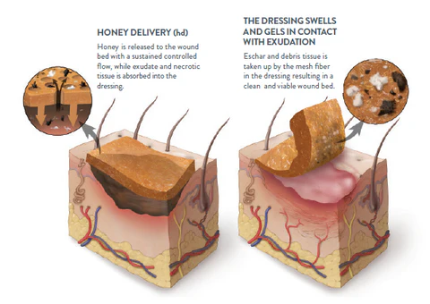

Honey has been used by humans for thousands of years. Whether as food, drink, or even medicine, humans have been extremely resourceful in their use of honey.
Our species has a relationship bees going back at least 9000 years. According to a 2003 study: By using a combined chemical, archaeobotanical, and archaeological approach, we present evidence here that ancient Chinese fermented beverage production does indeed extend back nearly nine millennia.
Honey can also be used a very effective medicine. Its antibacterial properties make it useful by inhibiting the effects of viruses, bacteria, and even fungus.
Additionally, studies have shown that honey shows anti-inflammatory effects in the human body. Lastly, there is a wealth of evidence to show honey's antioxidant effects due to
the amout of flavinoids within the viscous fluid.

Fig. 2 Honey infused wound dressingLearn more about the medicinal benefits of honey